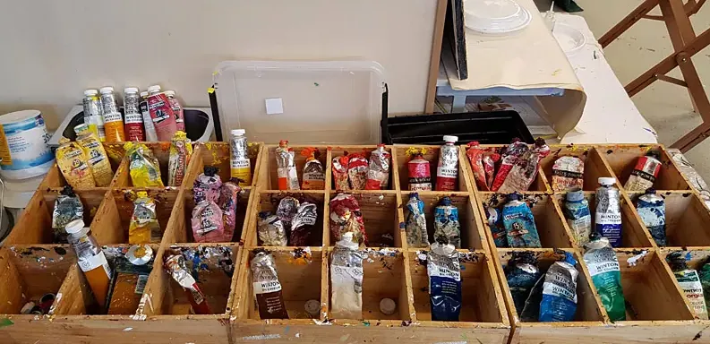

5x een bijzonder uitje in Nijmegen
Gepubliceerd op 24 oktober 2022, bijgewerkt op 20 februari 2024
Onderdeel van de gids Musea in Nijmegen

Een leuk uitje in (of in de buurt van) Nijmegen … Waar begin je dan? Tja, waar heb je zin, wat zoek je? In een redelijk grote stad is natuurlijk altijd wel leven in de brouwerij; je kunt je er altijd wel vermaken zonder speciaal iets te doen. Maar wil je iets leuks doen in Nijmegen wat niet alledaags is en waarbij je soms ook nog iets leert, dan hebben we hier een paar echt bijzondere uitjes voor jou! Wordt het kunst, dans, theater, opera … of fietsen, maar dan anders?
1 – Leren schilderen in een atelier
‘Iedereen komt beter uit de verf in een prettig, sfeervol werkklimaat met veel persoonlijke aandacht’, is het credo bij Atelier T’Lichteraan in Nijmegen. Hier leer je schilderen onder persoonlijke begeleiding en op basis van het werkstuk waar je mee bezig gaat. Aan de hand van directe aanwijzingen over bijvoorbeeld perspectief of kleurenleer raak je bedreven in de kunst van het ambacht schilderen. Je kunt leren van de feedback van de lesgroep en als je dat wordt je werk opgenomen in de galerie op de website. Het atelier organiseert ook exposities.

2 – Leer een nieuwe dans
Als je houdt van lekker dansen en muziek is een dans leren een superleuk uitje in Nijmegen. Bij Danscentrum Vermeulen weten ze dat al bijna vijftig jaar en je kunt er dan ook terecht voor heel verschillende stijlen. Behalve het klassieke stijldansen, kun je er Zuid-Amerikaans dansen, streetdance/hiphop, kleuterfunk, minifunk en zelfs tapdance leren! Je kunt natuurlijk een reeks lessen volgen – dan heb je elke week een avondje uit – maar ook een workshop boeken, waarin je in een dag(deel) de basics van je favoriete dans leert.
3 – Bezoek het theater
Een avondje of middagje theater is ook een heerlijk uitje in Nijmegen. Cultuurhuis de Lindenberg heeft elke maand theatervoorstellingen, cabaret, films, toneel en concerten. Houd de agenda dus in de gaten en mis je favoriete voorstelling niet.
4 – Ga toch fietsen … op het spoor
Een uitje even buiten Nijmegen in het grensgebied met Duitsland is fietsen op het spoor. Pardon? Ja inderdaad, je fietst een route over een spoor met een fietstrein. Bijzonder uitje toch? Je kunt fietsen op een treinfiets voor 2 tot 4 personen of je gaat op de clubfiets (14 personen), dus ook leuk voor een groepsuitje! Je kunt de spoortocht ook combineren met diverse activiteiten. De stations van dit bijzondere spoor zijn Groesbeek, Kleve en Kranenburg. Het oudste deel van het oorspronkelijke spoor (Kleve) dateert uit 1863 en de laatste treinrit van Kleve naar Nijmegen was in 1988; de fietstrein rijdt er sinds 2008.
5 – Uitje met een klassiek tintje
Voor dit uitje met een symfonisch karakter kun je in Nijmegen terecht, maar ook in vele andere plaatsen in Gelderland en Overijssel. Phion: orkest van Gelderland en Overijssel geeft door de twee provincies live klassieke concerten in diverse theaters, concertzalen en daarbuiten. Filmmuziek, muzikale sprookjes, maar ook stukken van beroemde componisten als Mahler en Dvorak om er maar een paar te noemen. Je kunt ook aanwezig zijn bij repetities en meemaken hoe dirigent en orkest samen werken aan een nieuwe uitvoering. Bezoek je een uitvoering van Phion, dan krijg je een muzikale belevenis. Het gezelschap combineert vertrouwd en nieuw en maakt zo live symfonische muziek voor bijna iedereen.